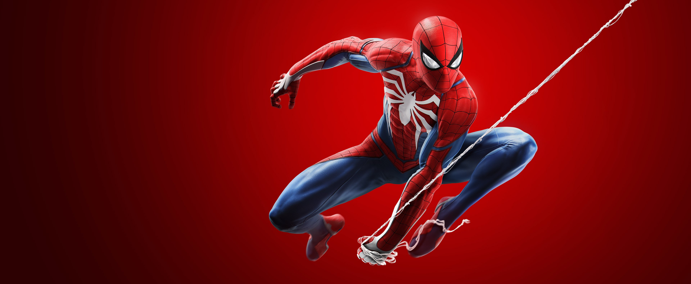

About Spider-Man
He is a part time student, and a full time super hero! With his web slinging powers, no villian coulld take him down. Spider-Man, also known as Peter Parker has combined the power of will and responsibility to over power anyone who posses a threat to innocent people and his community!
Spider-Man swinging to save the day
Spider-Man's characteristics
- Got bitten by a radioactive spider
- Learned how to use his powers resposibly, but the hard way
- Still makes mistakes from time to time
Spider-Man's Friends
Spider-Man has some great friends, his closest being Mary Jane. Click on the links below to read more about them: